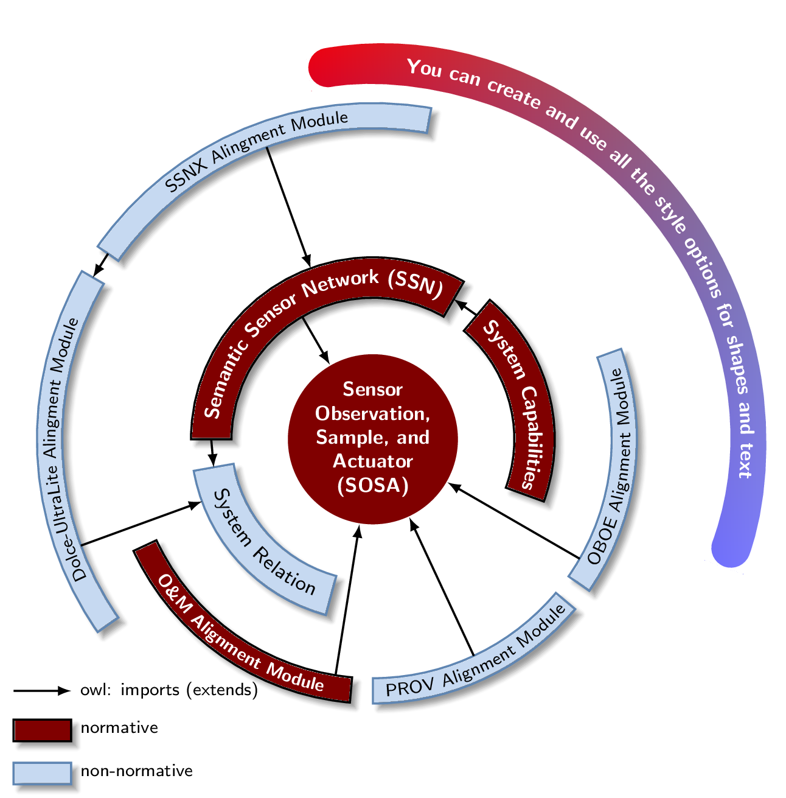

\documentclass[border=5pt]{standalone}
\usepackage{xcolor}
\definecolor{ocre}{HTML}{800000}
\definecolor{sky}{HTML}{C6D9F1}
\definecolor{skybox}{HTML}{5F86B3}
\usepackage{tikz}
\usepackage{pgfmath}
\usetikzlibrary{decorations.text, arrows.meta,calc,shadows.blur,shadings}
\renewcommand*\familydefault{\sfdefault} % Set font to serif family
% arctext from Andrew code with modifications:
%Variables: 1: ID, 2:Style 3:box height 4: Radious 5:start-angl 6:end-angl 7:text {format along path}
\def\arctext[#1][#2][#3](#4)(#5)(#6)#7{
\draw[#2] (#5:#4cm+#3) coordinate (above #1) arc (#5:#6:#4cm+#3)
-- (#6:#4) coordinate (right #1) -- (#6:#4cm-#3) coordinate (below right #1) arc (#6:#5:#4cm-#3) coordinate (below #1)
-- (#5:#4) coordinate (left #1) -- cycle;
\def\a#1{#4cm+#3}
\def\b#1{#4cm-#3}
\path[
decoration={
raise = -0.5ex, % Controls relavite text height position.
text along path,
text = {#7},
text align = center,
},
decorate
]
(#5:#4) arc (#5:#6:#4);
}
%arcarrow, this is mine, for beerware purpose...
%Function: Draw an arrow from arctex coordinate specific nodes to another
%Arrow start at the start of arctext box and could be shifted to change the position
%to avoid go over another box.
%Var: 1:Start coordinate 2:End coordinate 3:angle to shift from acrtext box
\def\arcarrow(#1)(#2)[#3]{
\draw[thick,->,>=latex]
let \p1 = (#1), \p2 = (#2), % To access cartesian coordinates x, and y.
\n1 = {veclen(\x1,\y1)}, % Distance from the origin
\n2 = {veclen(\x2,\y2)}, % Distance from the origin
\n3 = {atan2(\y1,\x1)} % Angle where acrtext starts.
in (\n3-#3: \n1) -- (\n3-#3: \n2); % Draw the arrow.
}
\begin{document}
\begin{tikzpicture}[
% Environment Cfg
font=\sf \scriptsize,
% Styles
myarrow/.style={
thick,
-latex,
},
Center/.style ={
circle,
fill=ocre,
text=white,
align=center,
font =\footnotesize\bf,
inner sep=1pt,
},
RedArc/.style ={
color=black,
thick,
fill=ocre,
blur shadow, %Tikzedt not suport online view
},
SkyArc/.style ={
color=skybox,
thick,
fill=sky,
blur shadow, %Tikzedt not suport online view
},
]
% Drawing the center
\node[Center](SOSA) at (0,0) { Sensor \\ Observation, \\ Sample, and \\ Actuator \\(SOSA)};
\coordinate (SOSA-R) at (0:1.2); % To make compatible with \arcarrow macro.
% Drawing the Tex Arcs
% \Arctext[ID][box-style][box-height](radious)(start-angl)(end-angl){|text-styles| Text}
\arctext[SSN][RedArc][8pt](2.25)(180)(60){|\footnotesize\bf\color{white}| Semantic Sensor Network (SSN)};
\arctext[SCap][RedArc][8pt](2.25)(50)(-20){|\footnotesize\bf\color{white}| System Capabilities};
\arctext[SRel][SkyArc][8pt](2.25)(190)(255){|\footnotesize\color{black}| System Relation};
\arctext[OMAM][RedArc][5pt](3.5)(205)(265){|\scriptsize\bf\color{white}| O{\&}M Alignment Module};
\arctext[PROV][SkyArc][5pt](3.5)(270)(320){|\scriptsize| PROV Alignment Module};
\arctext[OBOE][SkyArc][5pt](3.5)(-35)(20){|\scriptsize| OBOE Alignment Module};
\arctext[DUAM][SkyArc][5pt](4.5)(215)(150){|\scriptsize| Dolce-UltraLite Alingment Module};
\arctext[SSNX][SkyArc][5pt](4.5)(145)(80){|\scriptsize| SSNX Alingment Module};
%ADITIONAL
\arctext[NEW][
color=white,
shade,
upper left=red,
upper right=black!50,
lower left=blue,
lower right=blue!50,
rounded corners = 8pt
][8pt](5.2)(100)(-20){|\footnotesize\bf\color{white}| You can create and use all the style options for shapes and text};
%Drawing the Arrows
%\arcarrow(above/below ID)(abobe/below ID)[shift]
\arcarrow(below DUAM)(above SRel)[15];
\arcarrow(below SSNX)(above SSN)[35];
\arcarrow(below SSN)(SOSA-R)[60];
\arcarrow(below right OMAM)(SOSA-R)[4];
\arcarrow(below right PROV)(SOSA-R)[25];
\arcarrow(below OBOE)(SOSA-R)[-5];
%Same level Arrows
\draw[myarrow] (left SSNX) -- (right DUAM);
\draw[myarrow] (left SSN) -- (left SRel);
\draw[myarrow] (left SCap) -- (right SSN);
\draw[myarrow] (-5,-3.5) coordinate (legend) -- ++(.8,0) node[anchor=west] {owl: imports (extends)};
\draw[RedArc] (legend)++(0,-0.4) rectangle ++(.8,-.3)++(0,.2) node[anchor=west] {normative};
\draw[SkyArc] (legend)++(0,-1) rectangle ++(.8,-.3)++(0,.2) node[anchor=west, color=black] {non-normative};
\end{tikzpicture}
\end{document}Created by David Li